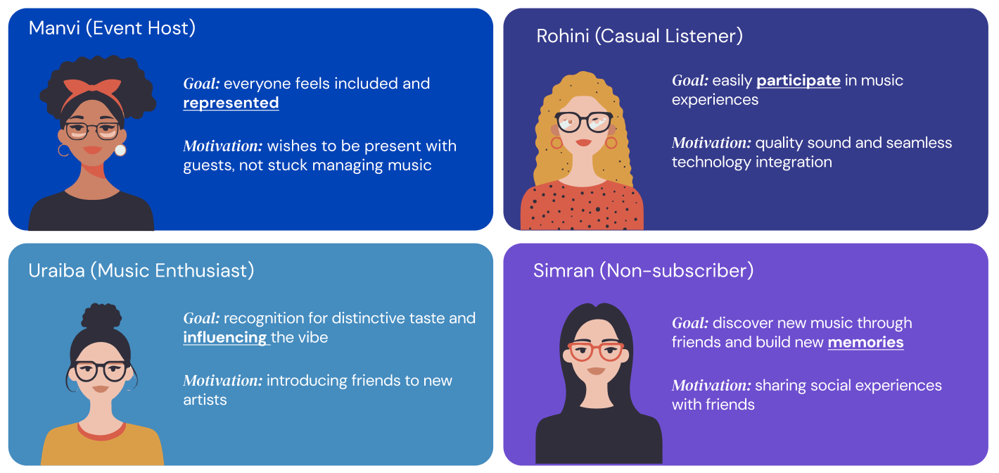

BeatDrop
Amazon Music Challenge Winner ✨
Reimagining social music experiences through human curation and AI-powered mixing.
Project Challenge
Streaming platforms excel at personalization but often miss the social joy of music. How might we create shared music experiences that foster connection and discovery among friends?

“Music streaming has become efficient but lost its social soul.”
The Magic Moment
Imagine arriving at a party where a song triggers nostalgia. You scan a QR code, add a track, and within moments the AI mixes it seamlessly. Everyone lights up, sharing recognition and connection. This collective joy is the heart of BeatDrop.
Introducing BeatDrop
BeatDrop transforms individual selections into collaborative DJ mixes by allowing friends to contribute tracks that are seamlessly mixed by AI, creating shared experiences that enhance music discovery and social bonds.
The Big Picture: BeatDrop isn't just a feature—it's a new way to experience music together. In an era where algorithms increasingly isolate us in preference bubbles, BeatDrop brings back the joy of shared musical discovery. By transforming individual selections into collaborative journeys.
The Magic Moment
Imagine arriving at a party where a song triggers nostalgia. You scan a QR code, add a track, and within moments the AI mixes it seamlessly. Everyone lights up, sharing recognition and connection. This collective joy is the heart of BeatDrop.
Research & Insights
Through desk and Voice of Customer research we realized that none of the current streaming platforms effectively capture the magic of creating music experiences together. In our user research we found:
- Streaming isolates users in algorithmic bubbles.
- Collaborative aspects of music are under-served.
- Users crave meaningful shared experiences.
User Journeys
Our research revealed four key personas that shaped our solution: the Host, the Enthusiast, the Casual Listener, and the New Subscriber.



"“If I was hosting a party I would absolutely quickly create and share this to offload the responsibility"
"“I would save the playlist from my friend's party. Those songs would mean something special to our group"
""Usually one person controls the aux cord and everyone else just has to deal with it. This actually lets everyone have a voice without turning into musical chaos."
Beyond Audio
BeatDrop goes further with visuals, lighting sync, and Echo integration. With cues like "Alexa play the next song" or "Alexa brighten up the mood" users can keep the vibe going without interrupting the flow.
Impact Metrics
BeatDrop grows through authentic social moments. This creates an acquisition model based on meaningful connections rather than advertising.
Next Steps & Key Learnings
Future Opportunities
BeatDrop can expand by integrating with Twitch for optional visual components like live DJ cams or crowd reactions. There are also opportunities for physical merchandise to enhance the experience, such as: BeatDrop records or vinyls of personal mixes or branded party kits with themed decorations and playlists.
Key Learnings
- Social context creates stronger bonds than personalization alone.
- AI can reduce friction and empower inclusivity.
- Designing for group dynamics shifts platform value.